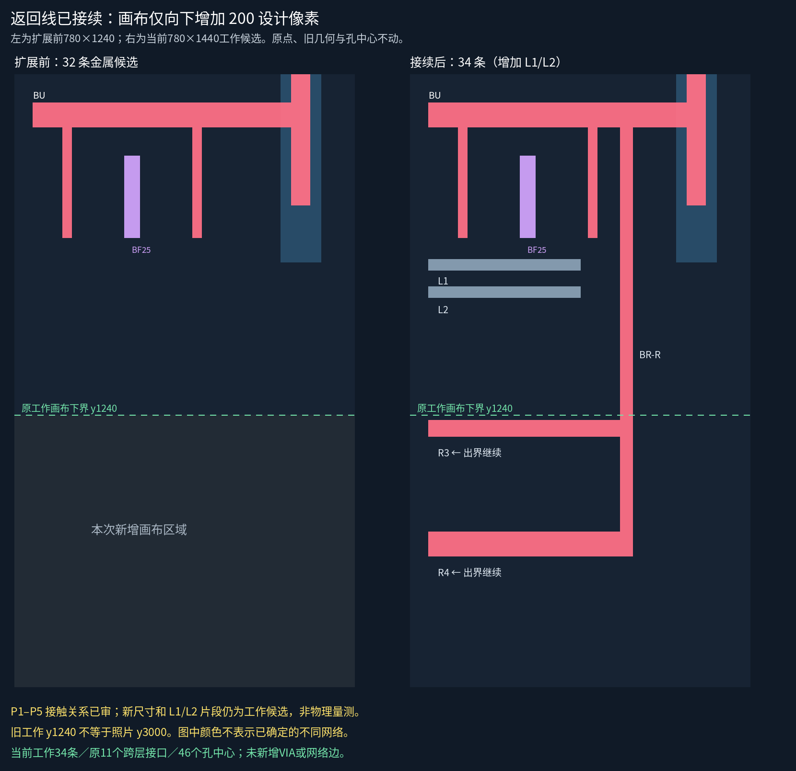

原送审来源：审批不重置
图中绿色y3000是旧来源参考边界，新局部来源以追加记录包含下部返回；旧记录没有重写。

按用户继续推进的指令，已分三个事务完成：只向下扩画布、追加原M1返回部分、单独加入L1/L2局部候选。源裁决P1–P5直接继承，不重问。
当前780×1440、34条金属候选；原点、原11个跨层接口和46个孔中心保持。没有新增VIA、网络编号或规范层采用。
五层切换及当前原图 · 全幅规则矢量图 · 当前状态 · 已审原话 · 原预案（历史）

扩画布历史随后续接续继承；重复回放不会再加一次200px，也不要求再次提交扩展声明。无声明的画布改变仍被拒绝。
| 编号 | 目标 | 已审本处关系 |
|---|---|---|
| P1 | BU | 本处接入 |
| P2 | L1-R | 本处不直接接 |
| P3 | L2-R | 本处不直接接 |
| P4 | BRR-H3070 | 本处接入 |
| P5 | BRR-H3175 | 本处接入 |
L1/L2本处不接BR-R不能推导全局异网。相邻y3090/y3158细条、BF24/BF26下端、其余23条短指、BR-C及完整网络仍未知。
图中绿色y3000是旧来源参考边界，新局部来源以追加记录包含下部返回；旧记录没有重写。
相关127项软件测试通过，其中19项检查显式下扩的原子性与防退化；金属相对宽度/间距、完整既有候选孔组包围和精确接续通过。
当前仍是工作候选。新增几何尺寸未获人审，物理尺度/PDK、精确配准、材料细节与全局网络没有升级；粉/紫/灰色不是已确认的电气网号。本处图形分离不等于全局电气隔离。
下一步沿R3/R4向左查可见连续部分与接口；保留出界继续，不把局部端部当芯片终点。浏览器交互未实测。